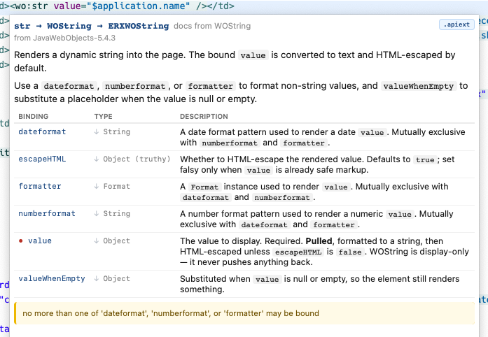
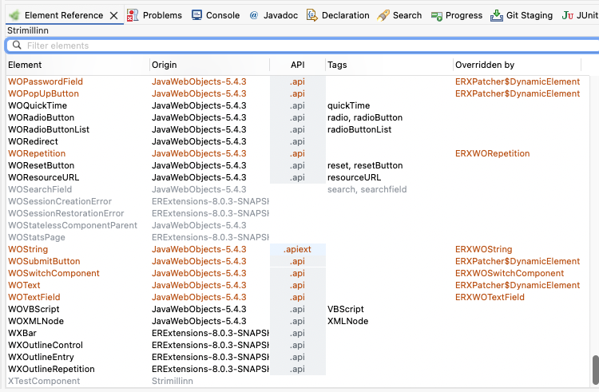
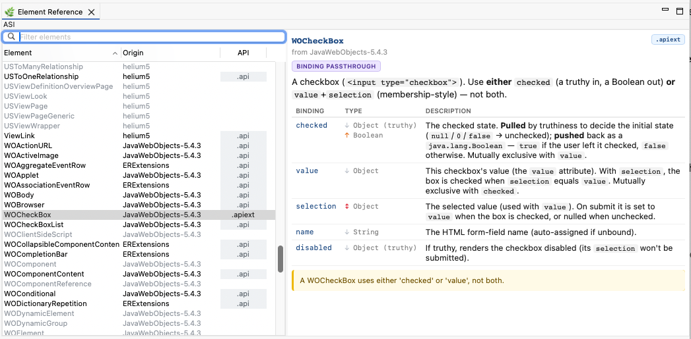
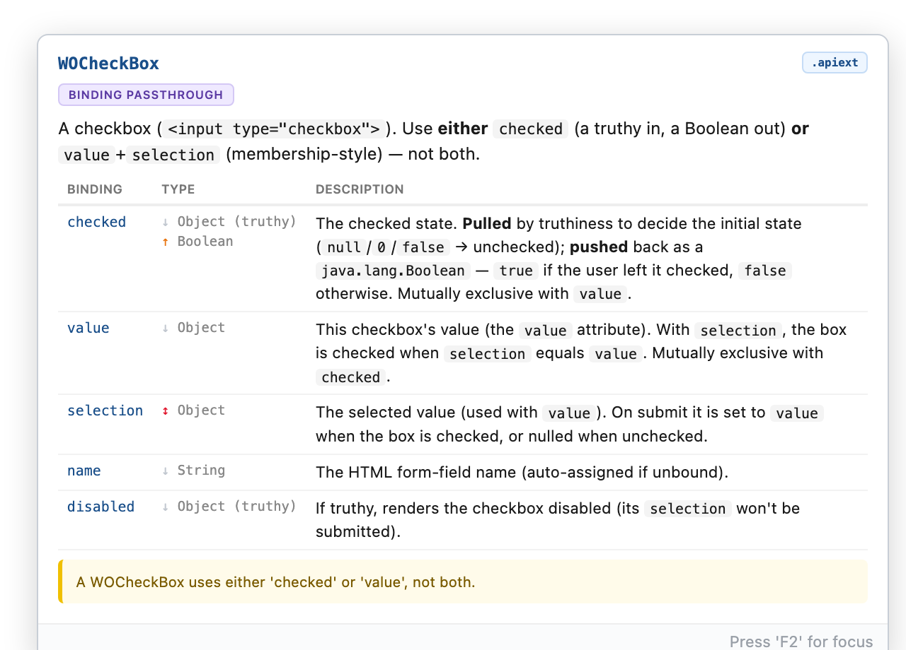

What's new in Parsley Template Editor
Two additions to the editor's dev server (localhost:9485), the HTTP surface external tools and AI agents drive — both aimed at the same thing: giving a tool the editor's own understanding of your templates, instead of making it guess.
/elementApi — the resolved binding API of any element, as JSON. Ask for WOPopUpButton (or str, or link — tag aliases and shortcuts resolve just like they do in a template) and you get back every binding with its accepted types, its direction (does the element read it, write it back, or both), whether it's required, its default, and the cross-binding rules — each with the same plain-English message the hover shows (“exactly one of… must be bound”). It's the editor's hover, as data. An agent that used to open WOPopUpButton.java to work out its bindings now asks in one call./validate check — the $-on-a-plain-tag trap. Writing style="$highlight" on a raw <div> renders the literal text $highlight, because plain HTML tags don't evaluate bindings — a mistake that hides until you look at the page. Validation now catches it with a precise warning that names the fix (use a wo: element or container). That whole class of bug is now caught before render.These pair with new endpoints on the runtime side (in ng-objects and wonder-slim): an eval endpoint that runs a Java snippet inside the live application — a REPL against your real objects and data, not a reconstruction — and a problems endpoint that returns the binding errors the app rendered into a page as data instead of markup to be scraped. Together they close the other half of the loop: not just make the change take effect, but exercise it and observe the truth.
The built-in dev server (localhost:9485) — the HTTP surface that lets external tools and AI agents drive Eclipse — now reports what actually happened, not just that a command was relayed. A batch of new endpoints and fixes, all born from real agent usage:
/status — what's running, per launch config: mode, uptime, project open state, compile errors, and the app's self-registered port with a live reachability check./console — a launch's console output over HTTP, kept after the process dies — so startup failures finally have a readable post-mortem./launch preflight — instead of pretending to succeed, a launch now refuses with a named reason (closed project, compile errors, already running), each with the parameter that overrides it. And waitForPort blocks until the app answers, provably died, or timed out./openProject — opens a closed project together with its workspace dependencies, resolved transitively from the poms (Maven workspace resolution only sees open projects, so opening just one is rarely enough), and clean-builds them. A fully closed workspace to a running, verified app is now one call./restart — stop, wait for termination, rebuild chosen projects, relaunch, wait for ready. The whole edit-cycle dance in one request./problems and /breakpoints — the Problems view as JSON, and a list of workspace breakpoints with a “Skip All” toggle (for the classic forgotten-breakpoint-on-a-hot-class mystery)./ — the server describes itself: a JSON index of every endpoint, so a tool landing cold can discover the API instead of guessing./refreshProject also stopped answering ok when the build produced compile errors — it now returns a build report naming them, so “my edit did nothing” mysteries end at the response instead of an hour later.
The template editor now ships a full .apiext description for every one of the standard WebObjects dynamic elements — all 39 of them, from WOString and WORepetition to WOForm, WOPopUpButton and the rest. Until now these built-in elements were described by the old, thin .api files, which knew a binding’s name but little else. The new descriptions are far richer, and they light up everywhere the editor already helps you.
For each element and each of its bindings you now get:
checked reads any value by truthiness but pushes back a real Boolean.WOApplet, WOVBScript, WOQuickTime…) are marked deprecated and struck through in the Element Reference, so it’s obvious what not to reach for.The descriptions are grounded in the published WebObjects element reference and the elements’ documented binding behavior, so what the editor tells you matches what the framework actually does. This is also the largest body of real .apiext yet — a solid, practical proving ground for the format as it grows toward a full tag library.
Editing a template and want to jump to the Java behind a binding? Put your cursor in a keypath and hit F3 — the same “Open Declaration” shortcut you already use in Java code. It now works in the template editor too, on element tags, binding names, and binding values, so you can navigate without reaching for the mouse.
The nice part is how it treats a keypath. Eclipse normally sees $activeUser.address.city as one thing and, on Cmd+click, jumps to the very end — the city method. But often you want a segment in the middle. Now both F3 and Cmd+click open the segment your cursor is actually on:
activeUser → opens activeUseraddress → opens addresscity → opens cityAnd when you hold Cmd and hover, the underline now highlights just the segment you’re pointing at — so what lights up is exactly what a click will open.
Phew. I've wanted this for so long: Eclipse/the template editor and the WO runtime now share a single, declarative tag registry — so the editor and the application will interpret tags through a single mechanism.
Until now, the template editor carried its own built-in "tag shortcut" registry for tags like <wo:str> and really had no idea whether it matched what WO would actually render at runtime. It usually did — but “usually” is where subtle, maddening mismatches live. The classic example: WebObjects frameworks substitute elements at runtime. Bind a <wo:str> and ERExtensions quietly swaps in its own ERXWOString when the page renders. That substitution lived only in framework code that ran at startup — completely invisible to the editor.
Now element tags are declared by frameworks and applications. A framework or application drops a simple parsley-tag-aliases.properties file on its classpath:
str = WOString # a friendly shortcut
WOString = ERXWOString # an element replacementA tag shortcut and an element replacement are pretty much the same thing — an alias from one name to another — so they share one mechanism. Resolution is recursive: str → WOString → ERXWOString, following the chain to whatever your app really renders. The Parsley runtime reads this file to build pages; the editor reads the very same files from your project’s classpath.
What you get, across the whole editor:
<wo:str> shows str → WOString → ERXWOString — the truth of what renders.

It is opt-in and per-project: a project that contains no alias files behaves exactly as before. And it’s the first step and foundation for something larger — a proper tag library, where a framework fully describes its own tags to the tooling.
A new Element Reference view (Window → Show View → Parsley) lists every element available to your project — searchable, sortable, with each one’s full API documentation a click away. The Origin column shows which framework an element comes from, and a double-click opens it.

From the template editor, Cmd+Opt+9 reveals the element under your cursor in the view — without moving focus, so your editing flow isn’t interrupted.
When a component’s .wod file is empty — as it always is for inline-binding templates — the WOD editor no longer takes up half the editor. It collapses to a thin bar, giving the template the full height; click the bar any time you want the WOD editor back.
Hovering a <wo:…> tag now shows detailed information about an element’s API — some documentation, its bindings, which bindings are required, and so on.

Boolean — the two are shown separately.This richer documentation is driven by an experimental .apiext format. The editor uses it when a parsable definition is available (today for a small set of built-in elements and for AjaxSlim’s components) and falls back to the classic definition otherwise — so existing projects keep working unchanged while the format settles.
Building on /refreshProject, the dev server gained a handful of endpoints that together let an external tool — most usefully an AI coding assistant working in your repo — drive the whole edit→build→run loop on a live WebObjects/Parsley application, without you relaying anything by hand. Everything is localhost-only, with no setup.
/validate?component=NAME runs Parsley’s template validator on a component and returns the problems (line, position, message) as JSON. Templates are long, error-prone strings whose mistakes usually don’t surface until the page renders; now they can be caught up front. (Eclipse’s own validation is editor-driven, so a plain refresh never checked templates — this fills that gap.)…/App.woa/log, with contains= and tail= filters. No more copy-pasting the Eclipse console to share what the app printed./apps lists each running app, its port, and which of its dependencies have source open in your workspace (with paths). A tool can find an app by name — no guessing ports — and knows which libraries it can actually read and edit versus jar-only ones./launch starts a launch configuration (listing them, and deliberately preferring a local/dev config so it never accidentally fires Production), and /stop shuts one down (cleanly, or with force=true for a JVM that a big hot-reload has wedged).Why this matters. Each piece removes a manual hand-off. The result is that an assistant can launch your app, edit source and templates, validate them, refresh the running instance, read back the console to confirm, and restart when a change needs it — closing the loop end to end. There’s a short guide for setting this up with an agent in the repo’s AGENTS.md.
The dev server has a new endpoint — /refreshProject?project=NAME — that refreshes a project from disk and rebuilds it, all in one call. It’s the programmatic equivalent of closing and reopening the project in Eclipse: it picks up file changes made outside the Eclipse editor and recompiles them. Add &build=false to refresh without building, or omit project to refresh every open project.
Why this matters: Eclipse only notices edits it made itself. When something else changes your source on disk — a code generator, a script, or an AI coding assistant working in the repo — Eclipse doesn’t know, so your running app keeps using the old compiled classes and the change seems to do nothing. You’d normally fix that by manually closing and reopening the project. Now a single HTTP call does it.
Why this is useful. It turns out to be the missing piece for working with an AI assistant on a live WebObjects/Parsley app. The assistant edits your source, calls /refreshProject, and the running app hot-swaps the change in immediately — so it can load a page and actually see the result of what it just wrote. No build/redeploy/restart cycle in between. The loop goes from “edit, then a human babysits a rebuild” to “edit, refresh, observe” — in seconds. The same applies to any external tool that edits your project and wants the running app to reflect it.
When you open a component, the editor now lands on the HTML template instead of the WOD editor. Opening a component is almost always about working on the template — and for inline-syntax components the WOD sidecar is usually empty — so HTML-first is the sensible default.
If you specifically open a .wod file (or .woo / .api), the editor still reveals that part — only the “no specific request” case (opening the component itself, via Open Component, double-clicking the .wo folder, or jumping in from an exception page) defaults to HTML.
The dev server — which lets your running application drive Eclipse, most usefully so that clicking a stack-trace line on an exception page in the browser opens that source line in Eclipse — is now on by default and needs no setup. The feature has always existed (it came over from WOLips); it’s just far more accessible now.
What changed:
localhost, which is its security boundary — anything that could reach it is already running on your machine. It previously required a shared password between the IDE and the app; that friction is gone, on both sides.ERXExceptionPage (and ng-objects’ equivalent) already generate the links, so for most projects this simply starts working.$application and $session keypaths now resolve against user subclasses in NG projectsIn ng-objects projects, keypaths like $application.formatters or $session.currentUser were producing false “There is no key” validation errors, even though the runtime resolves them correctly. The validator was checking the bare NGApplication / NGSession class instead of walking down to the user’s Application / Session subclass where the actual keys live.
The mechanism for “when this is the declared type, look at subclasses in the current project instead” has been in place for years for the classic WebObjects equivalents (WOApplication, WOSession, WODirectAction) — the ng-objects classes were just missing from the list. Now added: NGApplication, NGSession, NGDirectAction.
Detection is purely name-based and works regardless of which framework the project targets — the validator picks up whichever class appears in the supertype chain.
Files with errors inside src/main/components, src/main/woresources, or any pulled-up ng-style resource folder were propagating their error markers up to the project, but the pulled-up folders themselves at the project root showed no marker — even though the error was clearly inside them. So you’d see the red error decorator on the project, then nothing on any of its visible children, with no easy way to drill down to where the error actually was.
The cause was an icon-overlay slot collision: the small “wo”/“ng” badge that marks pulled-up source folders was using the same image overlay slot as Eclipse’s standard problem-marker decorator. The badge was applied first, blocking the marker. The badge has been moved to the top-right corner of the folder icon, leaving the bottom-left slot free for the problem marker.
Action methods and other unprefixed methods whose names start with an uppercase letter — for example HttpServerUpdateClicked() or HTTPServerUpdateClicked() — were producing false “There is no key ‘X’” errors when bound from a template, even though valueForKey("HttpServerUpdateClicked") finds the method correctly at runtime.
The editor was lowercasing the first character of every method name to derive the binding key, which produced names like hTTPServerUpdateClicked or httpServerUpdateClicked. The runtime never finds methods by those keys (literal-method lookup is case-sensitive), so the editor's “Did you mean...?” suggestion was actually pointing at a key that wouldn't have worked.
The fix follows the standard Cocoa / WebObjects KVC convention:
get/set/is prefix, the binding key is the method name preserved exactly. HttpServerUpdateClicked() → key HttpServerUpdateClicked; title() → key title.getURL() → URL; getTitle() → title; getHttpServer() → httpServer.The same fix applies to the rename refactoring — renaming HttpServerUpdateClicked() on a Java class now correctly updates HttpServerUpdateClicked in bound templates.
Two improvements aimed at users running Eclipse in a dark theme:
Plain text now follows Eclipse’s editor theme. The HTML, embedded JavaScript, and embedded CSS scanners used to set the default text color to a hardcoded value (pure black by default), which made plain content — HTML body text, CSS selectors and braces, JavaScript identifiers — render black on a dark background and effectively disappear. These scanners now defer to Eclipse’s standard editor foreground color, which is theme-aware. In dark mode the same text shows up in light gray; in light mode it stays dark, exactly as before.
As part of this change, the “Foreground Color” field in Preferences → Parsley has been removed — it was the setting that previously hardcoded the black default and is no longer needed. To customize the editor’s default text color, use the standard Eclipse setting at Preferences → General → Editors → Text Editors → Colors and Fonts.
New “Embedded CSS” and “Embedded JavaScript” preference pages under Preferences → Parsley, exposing color settings that previously had no UI:
If you’ve been irritated by the dark-blue CSS property color on a dark editor background, this is where to fix it.
This is a first readability pass. The remaining tag/attribute/binding colors and the <wo:> background tint are still tuned for light themes — theme-aware defaults for those are next.
The New Project wizard now generates projects using the latest released dependency versions:
8.0.0 (released, replacing the previous 8.0.0.slim-SNAPSHOT; the group id is now is.rebbi.slim)0.1.1 (was 0.1.0)1.1.4 (was 1.0.5)Existing projects are unaffected — this only impacts new projects created via the wizard.
Tags with duplicate attributes — e.g. <div class="a" class="b"> — now produce a validation error. The first occurrence wins (per the HTML spec) and the duplicate is highlighted in the editor and Problems view. Detection is case-insensitive, so class and Class are correctly flagged as duplicates.
Templates with stray close tags — e.g. <div></div></div> with more closes than opens — now correctly report each dangling close tag as a validation error (“<div> start tag is not found.”) in the Problems view and inline in the editor.
This was a long-standing bug inherited from the original WOLips parser: the FuzzyXML close-tag handler had a defensive early return whenever the open-tag stack was empty, which silently swallowed the exact case the validation was meant to catch. An empty stack on a close tag is precisely an extraneous close tag.
Fixed a bug where close-tag completion (Ctrl+Space) would suggest the wrong tag after a self-closing tag whose attribute value started with a delimiter character — typically a parenthesis, like <wo:str valueWhenEmpty="(empty) "/>. The scanner’s quoted-value tracking lost state when the first character inside the quote was a delimiter, which in turn broke the self-closing pop and left the tag sitting on the unclosed-tag stack. Subsequent close-tag completions would incorrectly suggest closing the stale tag.
Also affects values starting with other delimiter characters (;, +, etc.), not just (.
Eclipse’s Find References (Ctrl+Shift+G) now surfaces template references in the standard Search view, right alongside Java callers.
Binding keys: Search for references to a method like name() in your component class and the Search view shows hits from inline HTML bindings (value="$name") and WOD binding values (value = name;). KVC getter/setter prefixes are handled automatically — searching for getTitle() finds references to key title.
Element types: Search for references to a component or element class and the Search view shows every template that uses it — <wo:MyComponent> tags in HTML and : MyComponent { declarations in WOD files. The scan covers the element’s own project and all projects that depend on it, so library components show usages from consuming applications.
Double-click any match to jump straight to the reference in the template file.
New setting in Preferences → Parsley → WOLips Coexistence: “Let Parsley handle all elements by default.”
By default, when WOLips is installed alongside Parsley, Parsley only activates for projects that have project.base set in their build.properties. This new preference flips that default — when enabled, Parsley handles editors, decorators, and keyboard shortcuts for all recognized WebObjects and ng-objects projects, even those without project.base.
Useful if you need WOLips installed for non-template-editing features but want Parsley to handle all template editing.
A new Usages tab in the component editor answers the question every developer eventually asks: “which other components use this one?”
Click the tab and it scans all open workspace projects for templates that reference the current component as an element — both inline <wo:ComponentName> tags in HTML and : ComponentName { declarations in WOD files. Results appear in a two-column table showing the using component’s name and its project. Double-click any row to jump straight to that component’s template.
The scan runs in the background on first tab activation, so it never blocks your editing. Hit Refresh to re-scan after making changes. Works for both standalone and bundle templates, and catches cross-project references.
A new refactoring that is the inverse of Extract Component. Select the content that should stay in the current component, press Cmd+2, X (or Edit > Refactor > Extract Wrapper…), and enter a name. Everything around the selection — the surrounding page chrome — is extracted into a new wrapper component with <wo:content /> where the selection was. The original template becomes just the selection wrapped in the new component tag.
Typical use case: extracting a page layout (navigation, header, footer) into a reusable wrapper, leaving only the page-specific content in the original component.
Both Extract Component (Cmd+2, E) and Extract Wrapper (Cmd+2, X) now correctly handle ng-objects projects — creating standalone .html template files instead of .wo bundles, and placing them in the correct resource folder.
Bundle → standalone: Right-click a .wo folder and select “Convert to Standalone Template” to convert it to a standalone template. The action replaces all <webobject name="X"> tags with their inline equivalents (<wo:Type binding="value">) using the WOD definitions, moves the HTML file out of the .wo folder, and deletes it. Supports multi-selection and recursive conversion of entire folder trees.
Standalone → bundle: Right-click a standalone .html template and select “Convert to Bundle Template” to wrap it in a .wo folder with an empty .wod file. Also supports multi-selection.
The bundle-to-standalone conversion respects the “Spaces around equals” formatting preference and the project’s configured inline binding prefix/suffix. Missing WOD entries are left unchanged with a warning dialog.
Cmd+2, I converts a single <webobject name="X"> tag to inline <wo:Type> syntax. Place the cursor on the tag, invoke the action, and the tag is rewritten with the correct element type and bindings from the WOD file. The WOD declaration is removed automatically. The reverse of the existing Cmd+2, W (Convert Inline to WOD).
Parsley now coexists cleanly with WOLips in the same Eclipse installation. Install both plugins and everything just works — no manual configuration needed. Parsley’s editors, menus, and actions use the 🌿 parsley icon, so you can always tell at a glance which plugin’s UI you’re looking at.
To activate Parsley for an existing WebObjects project, add project.base=wo to the project’s build.properties. Projects without this property continue to use WOLips.
Opening a component whose template contained a <style> tag with CSS the parser couldn’t handle (e.g. @import("...")) would throw a NullPointerException and prevent the editor from loading. The CSS class-name completion processor now handles unparseable stylesheets gracefully.
Renaming a method or field in a component’s Java class via Refactor > Rename now automatically updates binding key references in the component’s own template files. WOD binding values (value = title;) and inline HTML bindings (value="$title") are included in the refactoring preview alongside the Java rename.
Key paths are handled correctly — renaming title() to heading() updates value = title.length; to value = heading.length;, changing only the first segment. KVC getter/setter prefixes are stripped automatically: renaming getTitle() to getHeading() renames key title → heading. String literals, caret references, and partial matches are conservatively excluded.
The editor now reports an error when a quote character appears inside an attribute name, catching the common typo of omitting = between an attribute name and its value — e.g. negate"true" instead of negate="true". The error message identifies the attribute and suggests the correct syntax.
The parser also recovers gracefully: the attribute name and value are correctly extracted despite the missing =, so downstream tools (binding validation, autocomplete, hover) continue to work on the recovered parse tree.
The editor now reports an error when a tag is missing its closing > — e.g. <wo:if condition="$showGraphs" followed by a newline. This common typo silently corrupts the document structure: the parser consumes the next line as part of the unclosed tag, making sibling elements disappear. The error marker now points directly at the malformed tag.
Double-clicking an attribute name after the first one in a tag (e.g. item or selection in a tag with multiple bindings) previously selected the preceding whitespace, the = sign, and surrounding spaces along with the name. The editor’s quoted-string selection was too eager — it found the nearest quotes on each side without checking whether they belonged to the same attribute value. Now it verifies the selection doesn’t span across attribute boundaries before claiming a match.
A forward slash in body text (e.g. <td>Price / amount</td>) was mistakenly treated as a self-closing tag marker, popping the current tag off the autocomplete stack. This caused close-tag completion (Ctrl+Space) to suggest the wrong tag. The scanner now only treats / as a self-closing marker when inside a tag context, leaving body text slashes harmless.
JavaScript operators like < inside <script> blocks were being parsed as HTML tags, corrupting the close-tag autocomplete stack. For example, if (a < b) caused the scanner to think a <b> tag was open. The scanner now skips over <script> and <style> content entirely, jumping straight to the matching closing tag.
HTML void elements like <br>, <img>, and <input> were pushed onto the unclosed-tag stack even though they can never have children. This caused close-tag completion to suggest closing the void element instead of its parent. The scanner now recognizes all 14 HTML void elements and never pushes them onto the stack, regardless of whether they use the explicit self-closing syntax (<br />) or not (<br>).
Tag shortcuts now work seamlessly in ng-objects projects. Write <wo:if>, <wo:repetition>, <wo:str> — the editor automatically resolves them to their ng-objects equivalents (NGConditional, NGRepetition, NGString). Binding validation, keypath checking, and error markers all work correctly against the NG class hierarchy.
Binding autocomplete is fully functional for all standard dynamic elements — type <wo:if, press Ctrl+Space, and get condition and negate offered as completions with required-binding markers. This works even though NG elements declare bindings via internal association maps rather than KVC-style accessors — the editor sources binding metadata from the global API definitions, supplementing Java reflection results.
Place the cursor on a <wo:ComponentName> tag and press F3 to jump straight to the Java class declaration — the standard Eclipse “Open Declaration” shortcut, now working in templates. Same navigation as Cmd+click, without leaving the keyboard.
Rename a binding in the .api editor and update all template references in one step. Check the “Refactor on rename” checkbox (top-right of the API editor), rename one or more bindings, save — a refactoring preview shows every .html and .wod file that uses the old binding name on that component. Confirm to apply all changes atomically, or cancel to keep only the .api change.
The scan covers the source project and all projects that depend on it (transitively), so components defined in framework projects have their references updated in consuming application projects. Multiple bindings renamed in the same session are processed in a single pass per file, ensuring correct results even when several bindings appear in the same tag.
Saving an .api file now immediately revalidates all open component editors. Mark a binding as required, save — and every open template that uses that component instantly shows (or clears) the corresponding validation markers. Previously, you had to re-save each component or restart Eclipse to see updated validation.
Cmd+Alt+5 now opens the .api file for the current element, even from a standalone Java editor. For components with templates, this opens the Component Editor with the API tab active. For WOElements without an associated component template, it opens the standalone API editor. If no .api file exists yet, one is created automatically. Previously, this shortcut only worked from within the Component Editor.
Fixed a bug where unchecking “Required” or “Will Set” on a binding in the API editor would fail silently or throw an error. The root cause was a double-removal in the DOM — the validation element was removed twice, once automatically when it became empty and once explicitly. Also fixed a stale-timestamp issue that could cause the editor to unnecessarily reparse the file after saving.
Fixed a long-standing bug (inherited from WOLips) where an apostrophe in body text — e.g. <p>what’s up</p> — would break tag autocompletion for the rest of the file. The tag-stack scanner mistakenly treated the apostrophe as the start of a quoted attribute value, swallowing all subsequent content (including < characters) so Ctrl+Space could never see a tag prefix.
Tag autocomplete now inserts self-closing tags (<wo:str />) for elements that don’t accept child content, and opening+closing tag pairs (<wo:form></wo:form>) for content components. Required bindings are pre-inserted with the cursor inside the quotes — e.g. completing wo:str inserts <wo:str value="" /> so you can start typing immediately. Both behaviors are driven by the element’s .api file.
Three optimizations that together eliminate the multi-second delay when opening components or triggering tag autocomplete in large projects. Resolved element types are now cached so deprecation checks don’t re-trigger JDT lookups; exact-match type lookups skip the expensive hierarchy scope entirely; and autocomplete tag info is cached per project so repeat invocations reuse pre-loaded attribute info instead of rebuilding it each time.
The formatting preferences (Preferences > Parsley > Template Formatting) now let you choose between tabs and spaces for indentation, and set the number of spaces per indent level (1–8, default 2). These settings existed in the formatter backend since the WOLips era but were never exposed in the UI.
Also fixed the formatter converting non-ASCII characters to HTML entities — accented letters, Icelandic characters, and other valid UTF-8 text (e.g. ó, ð) would be replaced with entity references like ó and ð. They are now preserved as-is.
Fixed empty HTML elements like <th></th> being collapsed to self-closing tags (<th />), which browsers treat as unclosed tags. Now only HTML void elements (<br>, <img>, etc.) and wo: tags are rendered as self-closing when empty.
The formatter now respects the original line structure of your template — if you wrote content on a single line (e.g. <a><wo:str .../> text</a>), it stays on one line. Multi-line content is properly indented. entities are also preserved instead of being silently replaced with regular spaces.
Blank lines between elements are now preserved exactly as written. Whether you separate </style> from <div> with one blank line or two, the formatter keeps them. This works at all nesting levels — between top-level blocks, inside nested structures, and around wo: control tags.
Spaces between inline tags are preserved — e.g. <strong>text</strong> <wo:str .../> keeps the space so rendered words don’t merge together.
HTML void elements (<br>, <hr>, <img>, etc.) are now rendered without a trailing slash — <br> instead of <br /> — matching standard HTML practice. Comment content and text entities (including single quotes in <script> blocks) are preserved exactly as written, with no unwanted escaping or whitespace normalization.
The New Component wizard now lets you choose between Standalone template (ng-objects style) and Bundle template (WebObjects style). The default is auto-detected from the project type — ng-objects projects default to standalone templates, WO projects to bundle templates.
Select HTML in the template, press Cmd+2, E (or Edit > Refactor > Extract Component…), enter a name — the selected HTML is extracted into a new component. The plugin creates the .wo folder with all files (.html, .wod, .woo, .java), replaces the selection with a <wo:NewComponentName/> tag, and opens the new component for editing.
The new component is placed alongside the current component and uses the same Java package and component superclass. The extracted HTML is automatically dedented — common leading whitespace is stripped so the new template starts at column 0. The selected HTML is placed as-is — bindings are wired up manually afterward.
Hovering over a <wo:ComponentName> tag now shows the component's API documentation — accepted bindings, required/settable markers, and defaults. Works for project components (via .api files) and built-in WO components (via WebObjectDefinitions.xml). When both a validation error and documentation are available, the error appears first with documentation below.
Renaming any WOElement/NGElement subclass via Refactor > Rename now automatically updates all references across the project. Inline binding tags (<wo:OldName> → <wo:NewName>, including close tags) and WOD element type declarations (Foo : OldName { } → Foo : NewName { }) are rewritten in every template that uses the renamed type.
This applies to all element subclasses — not just components, but also custom dynamic elements. Tag shortcuts (like <wo:if> for WOConditional) are not affected, since they use the shortcut name rather than the class name.
Renaming a WOComponent/NGComponent Java class via Refactor > Rename now also renames the .wo folder, all contained template files (.html, .wod, .woo), standalone .html templates, and .api files to match.
Works in both directions: a “Rename Component…” context menu action on .wo folders renames from the template side, delegating to JDT’s rename so both the Java class and template files are renamed together.
Miscapitalized tag shortcuts are now flagged as validation errors. Writing <wo:Repetition> when the shortcut is defined as repetition now produces an error with a "Did you mean 'repetition'?" suggestion. Uses the same error format as element type errors — no distinction between shortcuts and class names. Previously, the case-insensitive matching silently accepted any capitalization. Quick-fix support via Cmd+1 and the Problems view.
Mistype an element name after <wo: and the editor now suggests corrections — "The class for 'Str' is either missing... Did you mean 'str'?". Catches capitalization errors (Str → str) and typos (WOStirng → WOString). Uses the same quick-fix infrastructure as keypath errors: Cmd+1, Problems view, and hover help.
When a line has multiple errors (e.g. <wo:Str value="$application.nme" />), Cmd+1 shows proposals for both the element name and the keypath error.
Mistype a key in a binding value and the editor now suggests corrections — "There is no key 'nme' in MyComponent. Did you mean 'name'?". Suggestions are computed using Damerau–Levenshtein string distance, which catches transpositions (vlaue → value), insertions, deletions, and substitutions.
Press Cmd+1 anywhere on the line to apply the fix instantly — no need to position the cursor on the exact error. Quick-fixes are also available from the Problems view (right-click → Quick Fix). Hovering over a squiggly-underlined error now shows the message inline.
<p:raw> and <p:comment><p:raw> treats its content as literal text — no dynamic tag processing, useful for embedding example code containing <wo:> tags. <p:comment> is a template-level comment that is stripped entirely from output. Both block types are rendered with a distinct background tint and muted text, are skipped by validation, support linked rename (Cmd+2, R), and isolate their content so broken HTML inside can't affect the rest of the document.
/ in attribute valuesFixed a long-standing bug where auto-close tag completion (Ctrl+Space) would suggest the wrong tag when an attribute value contained / — e.g. href="/". The / was mistakenly interpreted as a self-closing tag marker, corrupting the tag stack. A second bug (operator precedence) caused the same issue with single-quoted values. Both are now fixed.
Create new ng-objects or WebObjects projects from scratch — complete Maven projects with a sample Main component, ready to run. The wizard generates all source files and imports the project via m2e.
A new "Maven" preference page under NG Component Editor settings. Detects whether your settings.xml has the WOCommunity repository configured and offers a one-click button to add it — no more hand-editing XML to get WebObjects dependencies resolving.
The WOCommunity Maven archetype catalog is now registered automatically, making WO project archetypes available in Eclipse's New Maven Project wizard.
Standalone templates (.html files not inside .wo folders) now have full editor support: autocomplete, keypath validation, and build-time validation — all on par with traditional .wo components. This is a key enabler for ng-objects, where single-file templates are the primary component format.
Fixed a long-standing intermittent bug inherited from WOLips where validation would report false errors — e.g. "exactly one of 'count' or 'list' must be bound" on a WORepetition that was correctly bound. The root cause was concurrent DOM access to the shared API model.
The plugin now works with both ng-objects and WebObjects projects in the same workspace. Per-project framework detection uses build.properties (project.base=ng or project.base=wo) with automatic classpath probing as a fallback.
Parsley Template Editor — extracted from the WOLips plugin suite (~18 plugins merged into one bundle), rebuilt as a standalone Eclipse plugin with unique identifiers for coexistence with WOLips.
WebObjects and ng-objects projects are marked with framework badges in the Package Explorer, making it easy to tell at a glance which framework each project uses.
WO and ng-objects specific source folders (src/main/components, src/main/woresources, src/main/webserver-resources) are pulled up to the project root alongside standard Java source folders, and marked with badges so they stand out.
A Package Explorer variant with component-aware behavior: bundle template folders are expandable (unlike WOLips), pulled-up source folders, and project/component decorators throughout.
Component files (.html, .wod, .woo, .api) automatically open in the Parsley editor — for any file inside a .wo folder, or for component files in ng-objects projects.